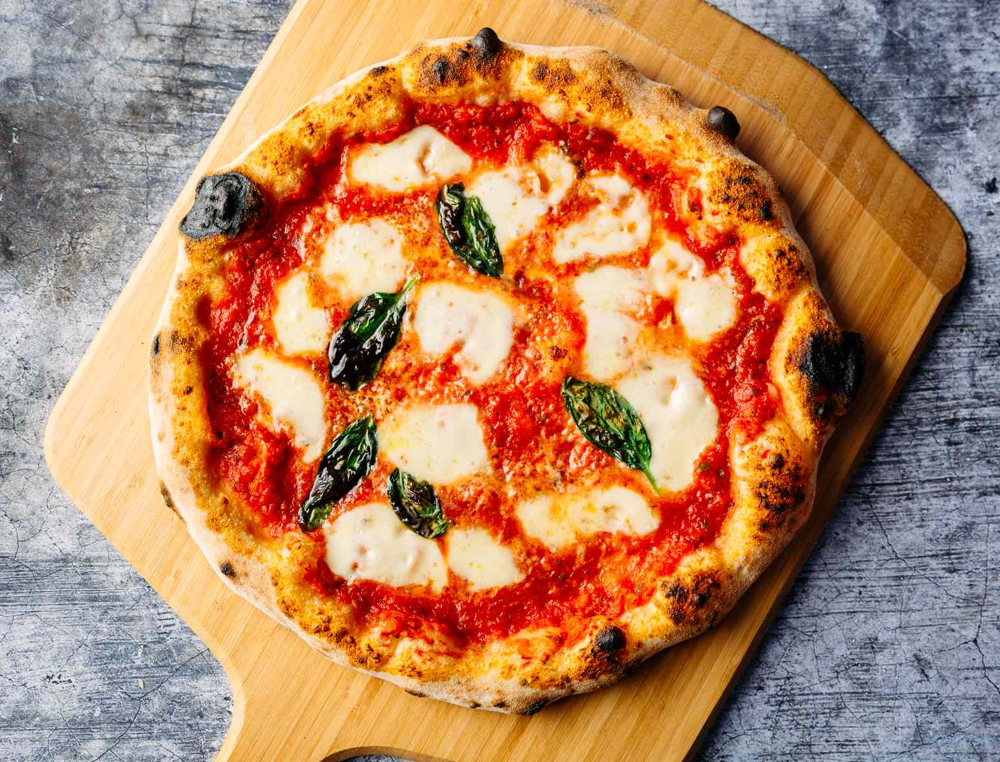

Bestest Pizza Recipe.

When John Chandler submitted this pizza recipe to Allrecipes more than 20 years ago, he had no idea how successful it would become. One of our top-performing recipes of all time, World's Best Pizza racks up more than 7 million views per year and has ranked among the most popular Pizza recipes on the internet for two decades. Unfortunately, John unexpectedly passed away at 53 years old — read all about his life and legacy here.
Make our most popular Pizza today to find out what all the fuss is about!
Ingredients:
- Meta
- Onion and Garlic
- Tomato
- Spices
- Cheese
- Pizza Dough
Steps:
- Make Meat Sauces
- Prepare Dough
- Layer up
- Preheat oven and Bake
All Recipies
<